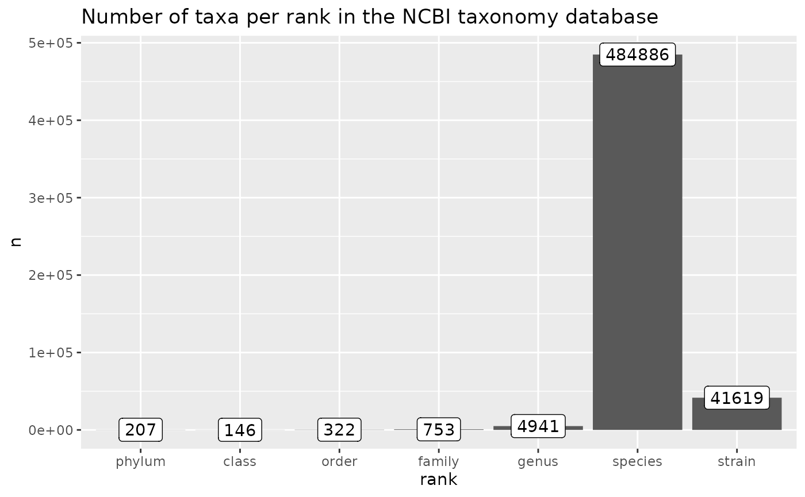
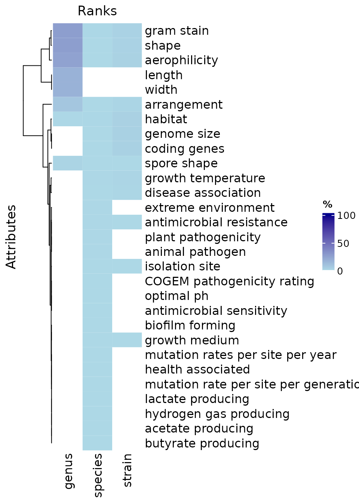

library(bugphyzzAnalyses)
library(bugphyzz)
library(dplyr)
library(purrr)
library(ggplot2)
library(tibble)
library(magrittr)
library(ComplexHeatmap)Estimate completeness
\[\text{Completeness (%)} = \frac{\text{N taxa in BugPhyzz}}{\text{N taxa in reference database (e.g., NCBI)}} * 100\]
bp <- physiologies() %>%
map(as_tibble)In this case, I’ll use the taxonomy of the NCBI as reference. Only the taxa belonging to Archaea or Bacteria will be imported.
ncbi_taxonomy_table <- get_ncbi_taxonomy()
glimpse(ncbi_taxonomy_table)
#> Rows: 545,453
#> Columns: 10
#> $ kingdom <chr> "Archaea", "Archaea", "Archaea", "Archaea", "Archaea", "Archa…
#> $ phylum <chr> NA, NA, "Candidatus Baldrarchaeota", "Candidatus Baldrarchaeo…
#> $ class <chr> NA, NA, NA, "Candidatus Baldrarchaeia", "Candidatus Baldrarch…
#> $ order <chr> NA, NA, NA, NA, "Candidatus Baldrarchaeales", "Candidatus Bal…
#> $ family <chr> NA, NA, NA, NA, NA, "Candidatus Baldrarchaeaceae", "Candidatu…
#> $ genus <chr> NA, NA, NA, NA, NA, NA, "Candidatus Baldrarchaeum", NA, NA, N…
#> $ species <chr> NA, NA, NA, NA, NA, NA, NA, NA, NA, NA, NA, NA, NA, NA, NA, N…
#> $ NCBI_ID <chr> "1935183", "2798909", "2798916", "2798922", "2798928", "27989…
#> $ tax_name <chr> "Asgard group", "Candidatus Baldrarchaeota", "Candidatus Bald…
#> $ rank <chr> "clade", "phylum", "class", "order", "family", "genus", "spec…
valid_ranks <- c(
'kingdom', 'phylum', 'class', 'order', 'family', 'genus', 'species',
'strain'
)
counts <- ncbi_taxonomy_table %>%
filter(rank %in% valid_ranks) %>%
split(f = factor(.$rank)) %>%
map_int(~ length(pull(.x, rank)))
counts %>%
as.data.frame() %>%
rownames_to_column(var = 'rank') %>%
as_tibble() %>%
set_colnames(c('rank', 'n')) %>%
mutate(rank = factor(rank, levels = valid_ranks)) %>%
ggplot(aes(rank, n)) +
geom_col() +
geom_label(aes(label = n)) +
ggtitle(
'Number of taxa per rank in the NCBI taxonomy database'
)
counts_bp <- map(bp, ~ {
attr_counts <- get_attr_counts(.x)
attr_counts / counts[names(attr_counts)] * 100
}) %>%
bind_rows(.id = 'attribute') %>%
column_to_rownames(var = 'attribute') %>%
as.data.frame() %>%
as.matrix()
counts_bp[is.na(counts_bp)] <- 0
order_cols <- valid_ranks[valid_ranks %in% colnames(counts_bp)]
counts_bp <- counts_bp[, order_cols]Draw heatmap
col_fun <- circlize::colorRamp2(c(0, 0.0001, 100), c("white", "lightblue", "darkblue"))
Heatmap(
counts_bp,
col = col_fun,
name = '%',
row_title = 'Attributes',
column_title = 'Ranks',
cluster_columns = FALSE
)